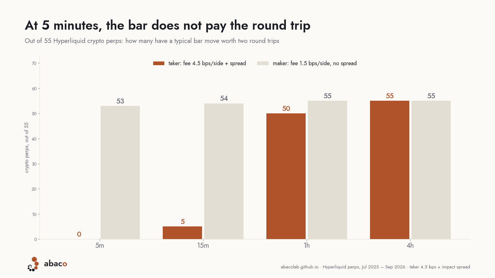
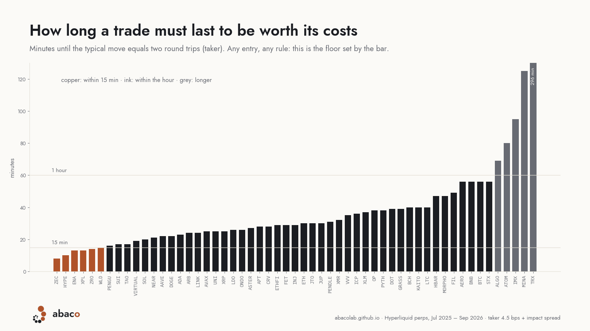
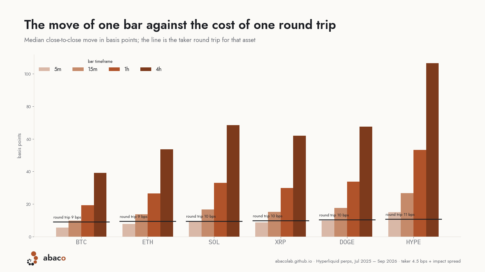

test · October 2026The typical move of one bar against the cost of one round trip, for 55 Hyperliquid crypto perps at 5m, 15m, 1h and 4h. Fourteen months of 5-minute bars, July 2025 to September 2026.
At 5 minutes the typical bar does not pay the round trip, on any of the 55. At 15 minutes it pays one trip on 50, but two trips on only 5. At 1 hour it pays two trips on 50; at 4 hours on all 55.

Because the bar is the unit everything in a strategy is measured in. The stop is one or two ATRs of that bar, the target a multiple of the stop, the trailing moves bar by bar. If the bar is smaller than the cost, a stop set at one bar is hit by ordinary noise, and every hit costs a full round trip.
And the bar sets the scale of every holding period: the move grows with the square root of the bars held. We measured it: from 5m to 1h the median move grows 3.55× (√12 = 3.46), from 5m to 4h 7.2× (√48 = 6.9), with little dispersion across the 55. So the 5-minute bar tells how long a trade must last for its move to be worth two round trips, whatever the entry rule.

A "5-minute strategy" on BTC that pays its costs has to hold for an hour: it is an hourly strategy with 5-minute stops, which is the worst of both.

Move: median absolute close-to-close change of one bar, in basis points. Round trip: taker, 9 bps of fees plus the asset's median impact spread. Minutes: how long a trade must last for its move to equal two round trips.
| asset | round trip, bps | 5m move | 15m move | 1h move | minutes to 2 trips |
|---|---|---|---|---|---|
| ZEC | 12 | 19 | 33 | 67 | 8 |
| HYPE | 11 | 15 | 27 | 53 | 10 |
| ENA | 14 | 17 | 29 | 58 | 13 |
| XPL | 17 | 22 | 39 | 81 | 13 |
| ZRO | 13 | 16 | 27 | 57 | 14 |
| WLD | 14 | 16 | 27 | 54 | 15 |
| PENGU | 14 | 16 | 28 | 56 | 16 |
| SUI | 11 | 12 | 21 | 41 | 17 |
| TAO | 14 | 15 | 26 | 52 | 17 |
| VIRTUAL | 15 | 16 | 28 | 56 | 19 |
| SOL | 10 | 10 | 17 | 33 | 20 |
| NEAR | 15 | 14 | 25 | 50 | 21 |
| AAVE | 13 | 12 | 22 | 44 | 22 |
| DOGE | 10 | 10 | 18 | 34 | 22 |
| ADA | 12 | 11 | 20 | 39 | 23 |
| ARB | 15 | 14 | 24 | 48 | 24 |
| LINK | 12 | 11 | 19 | 37 | 24 |
| AVAX | 11 | 10 | 18 | 37 | 25 |
| UNI | 15 | 13 | 23 | 45 | 25 |
| XRP | 10 | 9 | 15 | 30 | 25 |
| LDO | 16 | 14 | 24 | 50 | 26 |
| ONDO | 16 | 14 | 24 | 48 | 26 |
| ASTER | 14 | 12 | 20 | 38 | 27 |
| APT | 15 | 13 | 23 | 46 | 28 |
| CRV | 16 | 14 | 25 | 49 | 28 |
| ETHFI | 19 | 16 | 28 | 57 | 29 |
| FET | 18 | 15 | 26 | 52 | 29 |
| INJ | 17 | 14 | 26 | 51 | 29 |
| ETH | 9 | 8 | 14 | 27 | 30 |
| JTO | 19 | 16 | 28 | 58 | 30 |
| JUP | 18 | 14 | 25 | 52 | 30 |
| PENDLE | 18 | 15 | 26 | 55 | 31 |
| XMR | 16 | 12 | 23 | 46 | 32 |
| VVV | 24 | 18 | 33 | 70 | 35 |
| ICP | 18 | 13 | 24 | 48 | 36 |
| XLM | 15 | 11 | 19 | 39 | 37 |
| OP | 19 | 14 | 24 | 49 | 38 |
| PYTH | 20 | 15 | 26 | 54 | 38 |
| DOT | 16 | 12 | 20 | 41 | 39 |
| GRASS | 27 | 19 | 34 | 70 | 39 |
| BCH | 12 | 9 | 16 | 31 | 40 |
| KAITO | 21 | 15 | 26 | 52 | 40 |
| LTC | 12 | 9 | 15 | 30 | 40 |
| HBAR | 16 | 10 | 18 | 37 | 47 |
| MORPHO | 21 | 13 | 24 | 49 | 47 |
| FIL | 19 | 12 | 22 | 43 | 49 |
| AERO | 24 | 14 | 26 | 54 | 56 |
| BNB | 11 | 6 | 12 | 23 | 56 |
| BTC | 9 | 6 | 10 | 19 | 56 |
| STX | 20 | 12 | 21 | 43 | 56 |
| ALGO | 23 | 12 | 21 | 43 | 69 |
| ATOM | 21 | 11 | 18 | 37 | 80 |
| IMX | 30 | 14 | 24 | 49 | 95 |
| MINA | 30 | 12 | 22 | 45 | 125 |
| TRX | 12 | 3 | 6 | 12 | 296 |
Nothing about where to enter. An event bar moves three to ten times the median, and that is the bar a strategy looks for. We measured that separately: after a 15-minute shock the gross move beats the round trip in 11 cases out of 110. The right entry does not rescue the timeframe.
Nothing about an edge either. Above two round trips there is room; room is not an advantage. Whether a rule has one is answered out of sample, and only there.
Bars at 15m, 1h and 4h are built from the 5-minute bars (first open, highest high, lowest low, last close), and a bar counts only when all its 5-minute pieces are there. Fees are Hyperliquid's base tier. The impact spread is the distance between Hyperliquid's impact bid and ask, median over the period, measured by us at 5 minutes. The 36 HIP-3 perps on stocks, indices and commodities are left out of this page: their bars include the hours when the underlying is closed, and need a session-only reading.